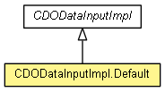

-
-
Method Summary
-
Methods inherited from class org.eclipse.emf.cdo.spi.common.protocol.CDODataInputImpl
getPackageURICompressor, readCDOBranch, readCDOBranchPoint, readCDOBranchVersion, readCDOChangeSetData, readCDOClassifierRef, readCDOClassifierRefAndResolve, readCDOCommitData, readCDOCommitInfo, readCDOFeatureDelta, readCDOFeatureValue, readCDOID, readCDOIDAndBranch, readCDOIDAndVersion, readCDOIDReference, readCDOList, readCDOLockArea, readCDOLockChangeInfo, readCDOLockOwner, readCDOLockState, readCDOLockType, readCDOPackageInfo, readCDOPackageUnit, readCDOPackageUnits, readCDOPackageUnitType, readCDOPackageURI, readCDORevisable, readCDORevision, readCDORevision, readCDORevisionDelta, readCDORevisionKey, readCDORevisionOrPrimitive, readCDORevisionOrPrimitiveOrClassifier, readCDOType
-
getDelegate, readBoolean, readByte, readByteArray, readChar, readDouble, readEnum, readException, readFloat, readFully, readFully, readInt, readLine, readLong, readObject, readObject, readObject, readShort, readString, readUnsignedByte, readUnsignedShort, readUTF, skipBytes
-
Methods inherited from class java.lang.Object
clone, equals, finalize, getClass, hashCode, notify, notifyAll, toString, wait, wait, wait
-
Methods inherited from interface java.io.DataInput
readBoolean, readByte, readChar, readDouble, readFloat, readFully, readFully, readInt, readLine, readLong, readShort, readUnsignedByte, readUnsignedShort, readUTF, skipBytes
Copyright (c) 2011, 2012 Eike Stepper (Berlin, Germany) and others.